Precursor Lesions
Overview
- Epithelial cell abnormalities (ECA) are divided into three main categories in TBS
- Squamous lesions
- Glandular lesions
- Other types
- TBS ranks ECAs in order of clinical significance- triaging of patients from least aggressive to most aggressive
- Of the squamous lesions:
- ASCUS is the lowest clinically significant
- LSIL
- HSIL
- Invasive squamous carcinoma is most clinically significant (highest risk of disease and death)
- All lesions should have classic appearances and fall into well-defined categories
- There are lesions however that do not (in between patterns)
- Often cells will demonstrate overlapping criteria or they are small in number
- These "equivocal/uncertain" findings led to the formation of the atypical cells of undetermined significance (ASCUS) category
- Before TBS other terms were used:
- Marked squamous atypia
- Atypical cellular changes
- Parakeratosis and atypical parakeratosis
- Dyskeratosis (still used)
- Did not lead to good patient outcomes
- ASCUS was an attempt to standardize these categories and their criteria
- Remains the category of uncertainty
- Colle of American Pathologists recommends that ASCUS rate does not exceed SIL rate by 2-3x or drop to less than 5% of SIL rate
Atypical Squamous Cells of Undetermined Significance (ASCUS)
- The general criteria for ASCUS is that of squamous cells with changes that exceed those of benign changes, but fall short of SIL
- Changes fall short qualitatively: not all criteria are present
- Changes fall short quantitatively: cells are few in number
- ASCUS divided into two subtypes:
- ASC-US, ASCUS of undetermined significance
- ASC-H, ASCUS cannot rule out HSIL
- ASC-US is defined as cytologic changes suggestive of LSIL but not definitive
- ASC-H is defined as cytologic changes suggestive of HSIL but not definitive
- Changes are also not definitively inflammation
- ASC-US Criteria:
- Increase in nuclear size, usually in mature squamous cells
- Nucleus is 2.5-3 times that of an intermediate nucleus
- Round to oval shape
- Minimal membrane irregularities
- Fine, evenly distributed chromatin, normal to mildly increased hyperchromasia
- Cytoplasmic changes are minimal
- Occasional bi-nucleation and peri-nuclear halos
- Changes suggestive of koilocytes
- These changes all fall short of SIL and/or there are cells with more definitive features but few in number
- Patient management of AS-US is testing for HR-HPV types cervical cytology at 6 and 12 months
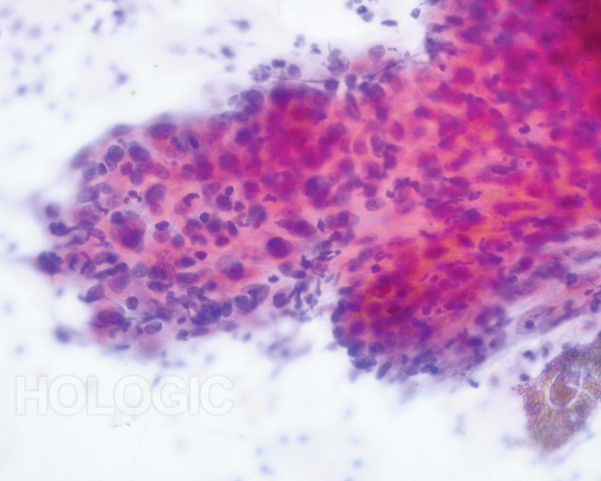
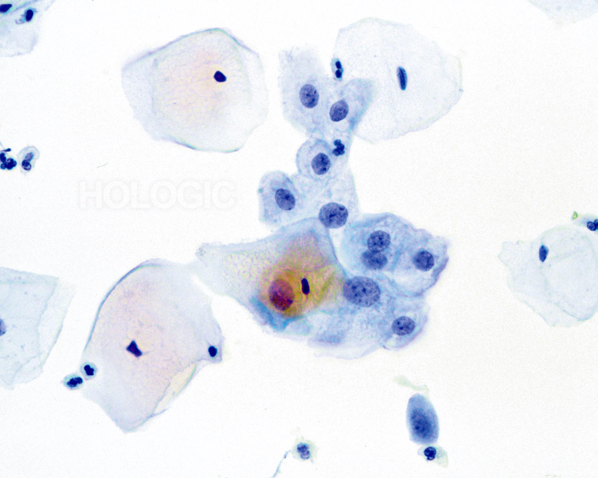
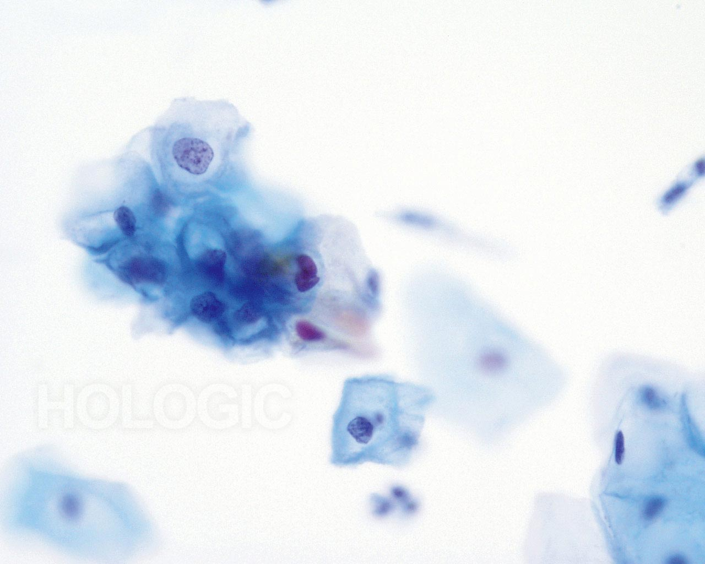
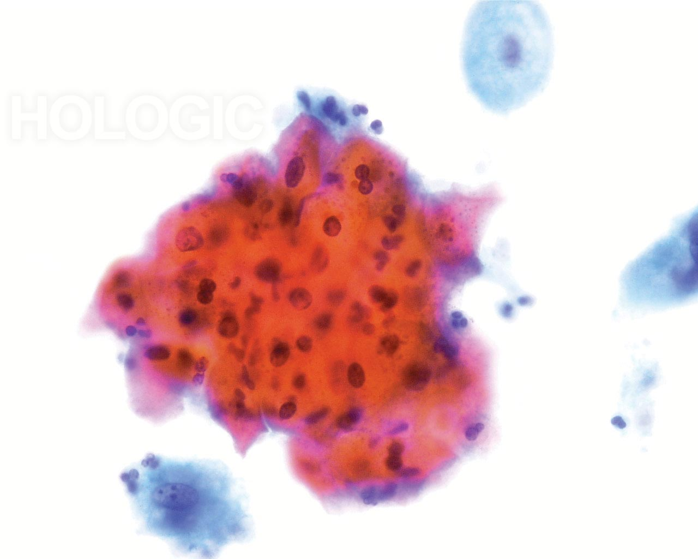
- ASC-US is more variable than ASC-H
- Variability can include:
- Cells with mature intermediate type cytoplasm
- Cells which have features of HPV such as rare cells with koilocytic changes
- Atypical (pleomorphic) parakeratotic changes
- Identical to dyskeratocytes
- APK are small cells with dense, eosinophilic to orangeophilic cytoplasm
- Variable "atypical" nuclei
- Elongated, enlarged and hyperchromatic
- Mask an underlying significant lesion
- Atypical repair
- Repair with nuclear abnormalities more than repair
- Occurs in both squamous and endocervical cells
- Crowding and pleomorphism
- Irregular nuclear membranes
- Dark and irregular chromatin
- Rare single cells but overall cohesive
- Clean background
- Atypia in atrophy: estrogen proliferation
- Parabasal cells with big dark nuclei, high N:C ratio
- Irregular nuclear membranes
- Chromatin clumped and uneven
- Hyperchromatic crowded groups
- Dysplasia typically not found in atrophy (needs estrogen)
- Estrogen test or colposcopy recommended
ASC-H
- ASC-H is represented by changes in immature squamous metaplastic cells or reserve cells
- These are immature cells with minimal cytoplasm and nuclei that are larger than squamous metaplastic cells
- Increase in N:C ratio with some anisonucleolis, nuclear membrane irregularity, and hyperchromasia
- The changes may fall short of definitive HSIL
- It may be that there are few cells scattered on the slide quantitatively
- Immature squamous cells: parasal and squamous metaplastic cytoplasm
- Criteria:
- Increase in nuclear size 2-3 times the size of normal squamous metaplastic cell nucleus
- Slight irregular nuclear membrane
- Slight increase in hyperchromasia
- Irregular clumping of chromatin
- Nigh N:C ratio
- Thick dense cytoplasm
- Isolated single cells in background should always be examined (often called "litigation cells")
- Quantitatively innsufficient when less than 10 cells present
- ASC-H also present in hyperchromatic crowded groups (HCG) or crowded sheets
- HCG are often interpreted as AGUS
- Differentials: carcinoma in situ, endocervical lesions, atrophic changes, and endometrial cells
- Patient management for ASC-H colposcopy
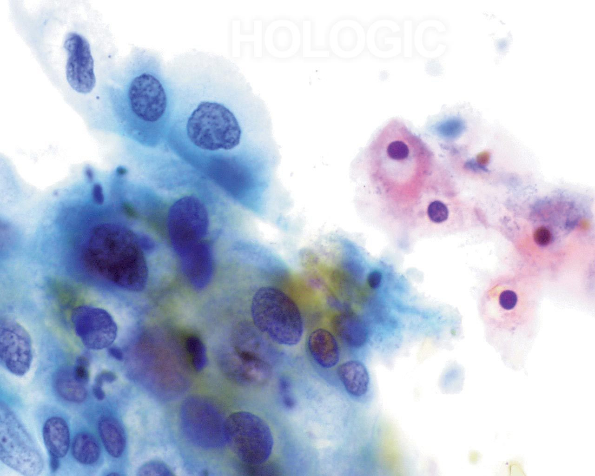
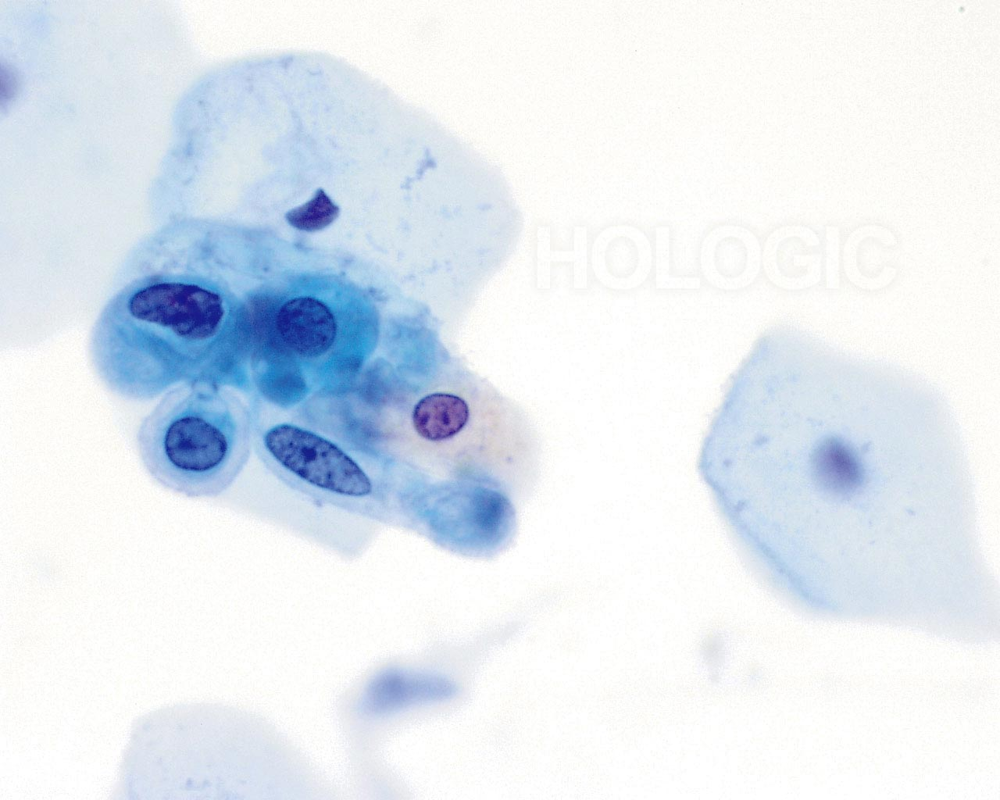
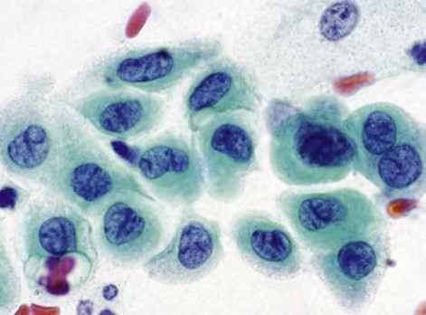
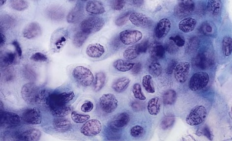
Squamous Intraepithelial Lesion Development
- Dysplasia is the impairment or partial impairment of basal cells as well as abnormal cell replication
- The abnormal cells keep replicating and move up from these abnormal layers
- It may present focally or multi-focally
- Cells that exfoliate reflect changes in germinal cells
- Classified by the thickness of epithelium with those impaired cells as well as the degree of abnormality in their nuclei
- Mild dysplasia is found in the lower third of epithelium
- Moderate dysplasia occupies between 1/3 and 2/3 of epithelium before maturation
- Severe dysplasia occupies 2/3 of the epithelium before maturing
- Carcinoma in situ has no maturation of basaloid cells
- Overall Cytologic Pattern of Precursor Lesions:
- Increase in amonut of chromatin clumping (increases with severity)
- Wrinkling and deep indentation of the nucelar membrane
- Number of contacts between nuclear membrane and cytoplasmic border (increases with severity)
- Increase in nuclear size
- Increase in N:C ratio
- Increase in hyperchromasia
- Decrease in cytoplasm = decrease in maturation
Low Grade SIL (LSIL)
- Most cases are associated with HR HPV 16
- Also low risk types 6 and 11
- Histologically recognized by the undifferentiated cells occupying the bottom one third of epithelium and minimal nuclear abnormality
- These cells are found throughout tissue segments
- Cells shed predominately in a single cell pattern (60% of cases)
- Abnormal nuclear changes are observed in cells with mature cytoplasm
- Polygonal shapes or round but with abundant cytoplasm
- The cytoplasm is thick and dense, and may be basophilic or eosinophilic
- Morphology
- Central nuclei, single, bi-, or multi-nucleated
- Consistent bi-nucleation may indicated HPV changes
- Nuclei of mild dysplasia are the largest dysplastic nuclei
- Size is 4-6 times the size of a normal intermediate cell nucleus
- Lowest N:C ratio of the dysplasias
- Nuclear membrane does not apporach cell border
- Nuclear membrane wrinkling and invaginations are minimal
- Hyperchromatic nuclei with coarsely granular chromatin (90% of cases)
- No visible nucleoli on conventional preparation
- Doctors can apply acetic acid (vinegar) to cervix, turning possible lesions white which will then be biopsied
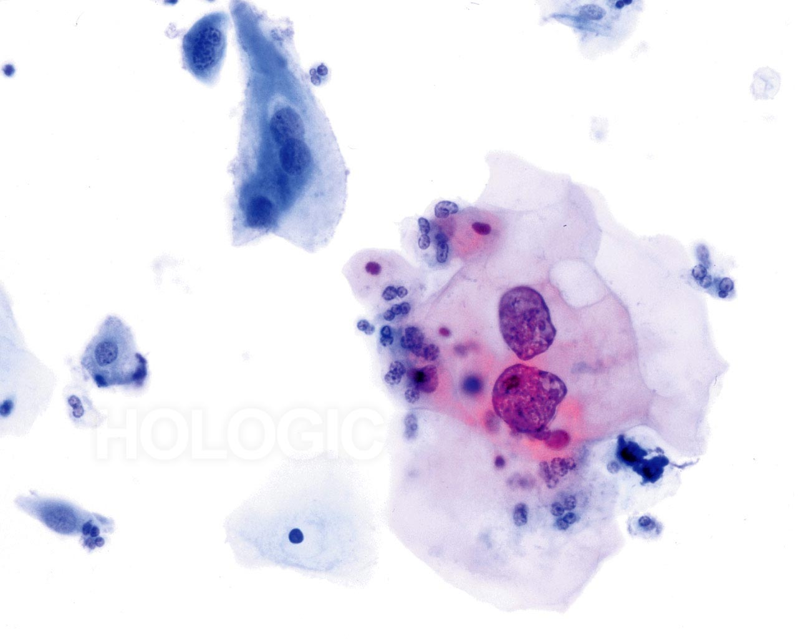
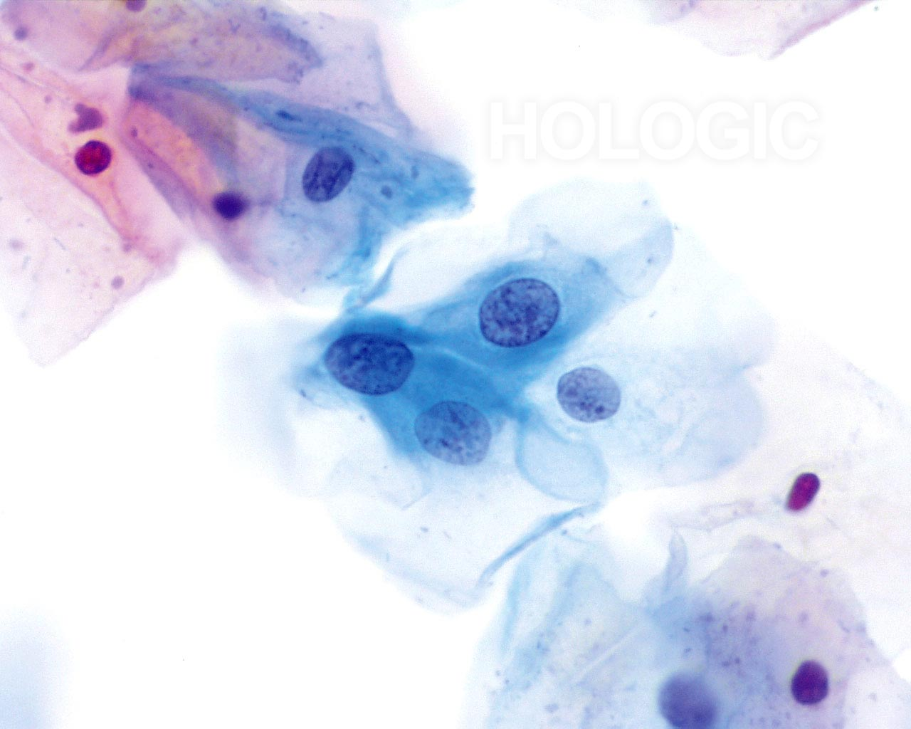
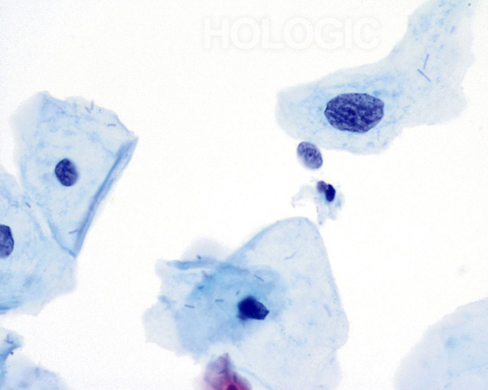
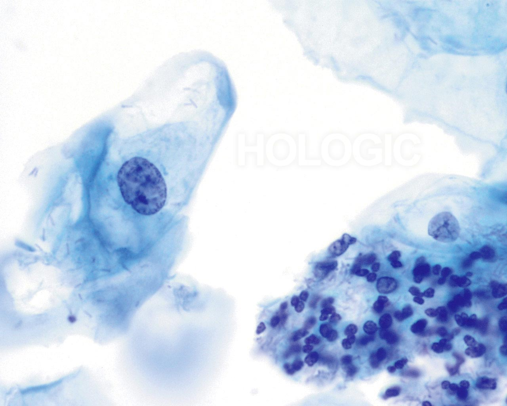
Koilocytes
- From the Greek term "koilos" meaning hollow"
- It is an altered, usually mature squamous cell
- Ultrastructural tests show viral particles within koilocytes
- Large perinuclear cavity with central clearing and a dense peripheral rim of cytoplasm
- Enlarged nuclei, commonly bi-nucleated
- Chromatin is hyperchromatic, with mild chromatin clumping
- Nuclear membrane shows slight irregularity
- The cytoplasm may show increased eosinophilia and keratinization
- In some cases, koilocytes may be present with minimal nuclear atypia
- These cases should still be reported as LSIL
- Differentials: peri-nuclear halos, de-glycogenated intermediate cells, reactive changes observed in Candida infections
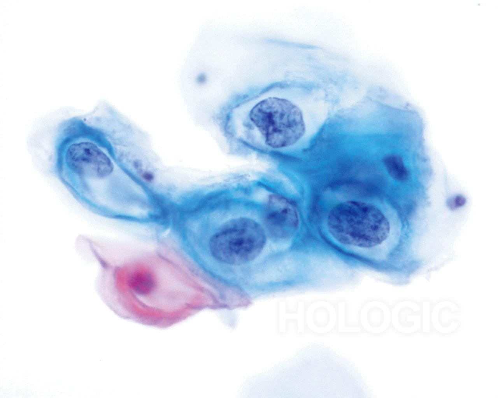
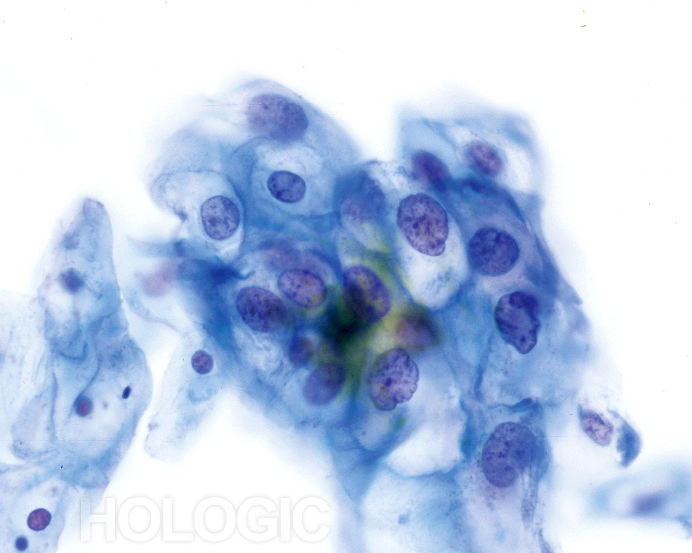
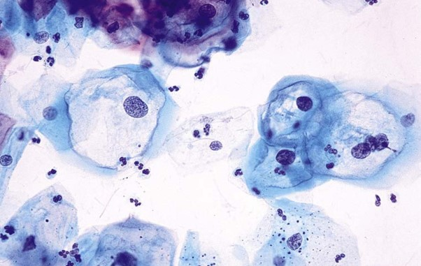
Dyskeratocytes
- Sheets and groups of squamous cells exhibiting very keratinized cytoplasm with small, hyperchromatic nuclei
- The nucleus of these cells must be carefully examined for pleomorphism and irregular nuclear contours
- They may be observed with or without koilocytic changes
- Often reported as ASCUS
- Differentials: hyperkeratosis and reactive changes
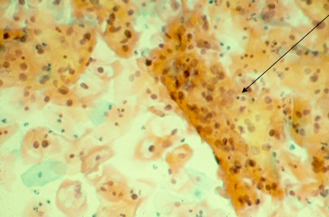
High Grade SIL (HSIL)
- Includes moderate dysplasia (CIN 2), severe dysplasia and carcinoma in situ (CIN 3)
- Cells have a greater capacity for progressing to invasive squamous cell carcinoma
- Associated with HPV 16 and 18, and other types
Moderate Dysplasia
- Undifferentiated basaloid cells occupy at least one third, but no more than two thirds of the epithelial thickness
- Cells shed singly and in sheets and clusters
- May also see syncytial groups
- Shed a little more than LSIL, but sampling is still key
- Round to oval, more intermediate to parabasal type than in LSIL
- Cytoplasm is more cyanophilic than eosinophilic
- Increase in the N:C ratio
- Nucleus occupies less than one half of the cytoplasm and is enlarged
- Hypercromatic
- Nuclear membrane may approach cell membrane in one location
- Increase chromatin coarseness and nuclear wrinkling
- No prominent nucleoli
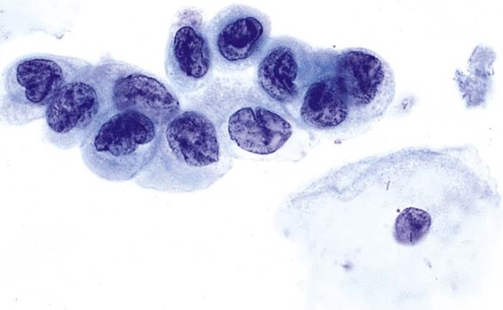
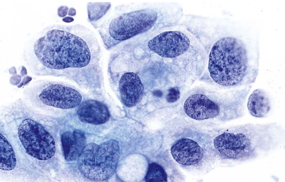
Severe Dysplasia
- Two thirds of the epithelium is replaced with basaloid cells, but there is some squamous differentiation at the surface
- Really no maturation of epithelium
- Greater capacity for progressing to invasive carcinoma
- Cell size comparable to parabasal cells, or smaller, may be spindly
- Spare cytoplasm, a thin rim only
- Nuclei contact cell membrane in more than one location
- N:C ratio is high, nucleus occupies at least 2/3 of the cell
- Cells shed singly, in aggregates or syncytial forms
- Dense, hyperchromatic, coarsely granular chromatin
- Evenly distributed
- Nucleus is "raisinoid" with wrinkling and deep indentations of the membrane
- Cytoplasm may have a degree of eosinophilia
- Clean background
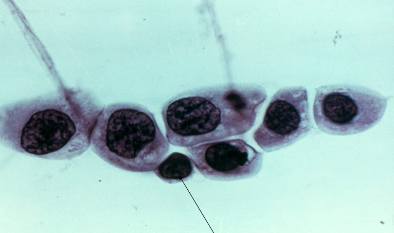
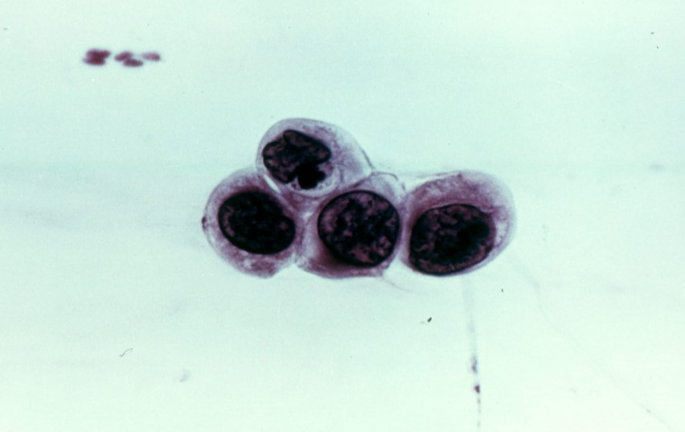
Carcinoma In Situ (CIS)
- Entire thickness of the epithelium is replaced by immature cells
- Cells are not found below the basement membrane
- No squamous differentiation
- Very high N:C ratio
- Highest of the dysplasias
- Cells are generally small
- Round to oval shape
- Cells presents predominately in syncytial, crowded 3D groups, loss of polarity
- Single cell pattern may also observed
- May be spindly in case of keratinizing dysplasia
- Cells have pleomorphic "raisinoid" nuclei, hyperchromatic with coarsely granular, evenly distributed chromatin
- Nuclei may become elongated
- Very sparse cytoplasm
- Cells may be numerous, again depends on sampling
- Mitotic figures/apoptotic bodies may be found
- Clean background, look for patches of tumor diathesis
- Differentials: Endometrial cells and endocervical cells
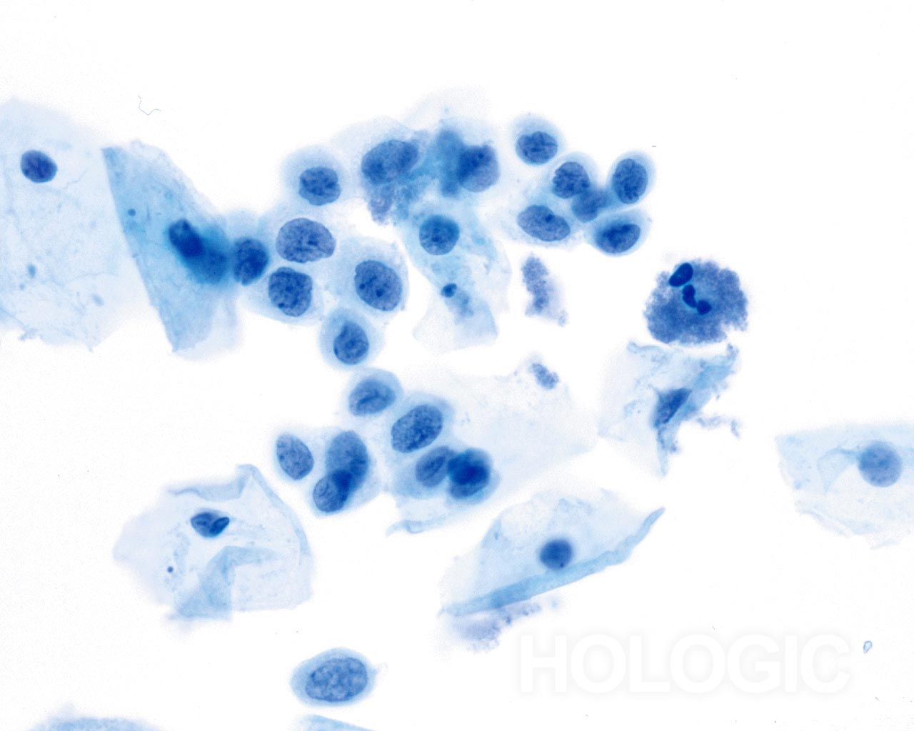
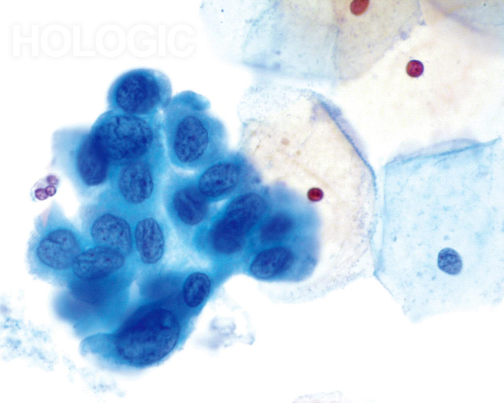
Types of Carcinoma in Situ
- Carcinoma In Situ is the most clinically significant of the high grade SILs
- Carcinoma in Situ is NOT cancer but has the highest risk of developing to invasive cancer
- Morphologically three types of CIS exist
- Small cell CIS
- Intermediate cell CIS
- Large cell CIS
- Recognized best on histology
- Types not reported cytologically
- No difference in treatment or prognosis
CIS-Small Cell
- Undifferentiated small abnormal cells
- Measure 11um in diameter
- Present in HGC or syncytia
- Oval to spindly nuclei
- High mitotic rate
- Hyperchromatic chromatin, fine to coarse and evenly distributed
- Chromocenters and no nucleoli
CIS-Intermediate Cell
- Medium sized cells
- HCG or syncytia
- Round to oval nuclei about 2-3.5 times the size of intermediate cell nuclei
- Twice the size of metaplastic cell nuclei
- Hyperchromatic with predominately fine, occasionally coarse chromatin
- Nucleoli more prominent
CIS-Large Cell
- Least common type of CIS
- More cytoplasm than other CIS
- Lower N:C ratio
- Can present as naked nuclei
- Challenging pattern cytologically
- Delicate, cyanophilic, ill-defined cytoplasm
- Nuclei 4-6 times the size or normal intermediate cell nuclei
- Syncytial arrangements, rarely single cells
- Irregular membranes
- Hyperchromatic chromatin, fine with chromocenters
- Inconspicuous nucleoli
Endocervical Gland Extension
- Carcinoma is defined when basement membrane is intact
- Has propensity to grow into endocervical glands (endocervical gland extension)
- Often times cells from squamous carcinoma in situ extend to the endocervical glands
- Cells will have dysplastic, elongated nuclei
- Cytoplasmic features such as vacuolization and basophilia
- Cells will be found admixed with normal endocervical cells
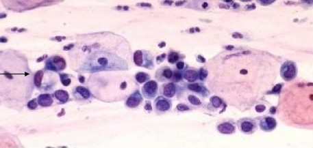
Microinvasion
- Isolated cells from CIS have infiltrated the basement membrane
- Histologic diagnosis, cytology can only provide clues
- Large numbers of cells in syncytia and sheets
- Single cells with features of carcinoma
- Background contains patches of tumor diathesis (key)
- Isolated nucleoli in metaplastic dysplasia (potentially good clue)
- Report: CIS suggest microinvasion
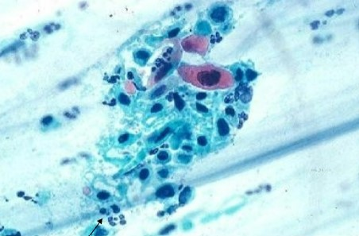
Morphologic Forms of Dysplasia
- Morphologically type types of dysplasia
- Keratinized dysplasia
- Metaplastic dysplasia
- Arises in, and mimics, benign protective mechanisms
- Keratosis
- Squamous metaplasia
Metaplastic Dysplasia
- Dysplastic cells associated with squaous metaplasia
- Dysplastic nuclei are found in squamous metaplastic cells
- Described as mature and immature types
- Indicates that lesions has extended or has arisen in the transformation
- Cells are classified as HSIL
- Mature squamous metaplasia can be more like LSIL
- Cells are mainly single but also in loose sheets
- Single cell pattern is hard to find
- Parabasal type cytoplasm but may be polygonal
- Hyperchromatic nuclei with fine chromatin
- 4-6 times the size of normal intermediate cell nuclei
- Always examine nuclei of metaplastic cells with care
- Challenge to differentiate from normal squamous metaplasia (bland nuclei are main clue)
- Nuclear membrane irregularites are subtle, HSIL is challenging to diagnose
- Differentials: LSIL, reactive changes, histiocytes
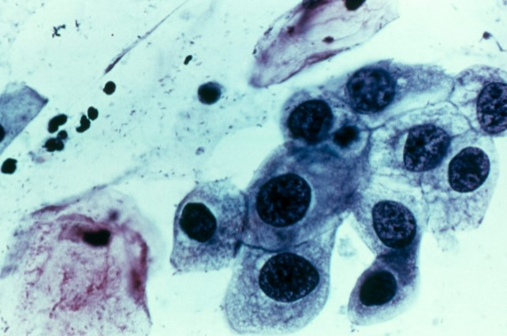
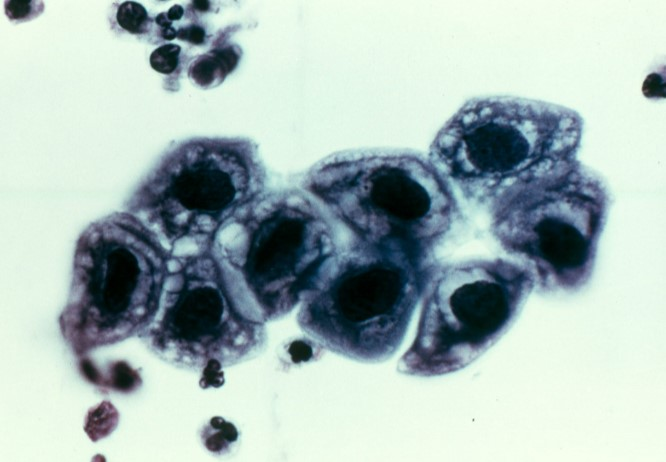
Keratinizing Dysplasia
- Also know as pleomorphic dysplasia
- Challenging to grade as low or high grade
- Atypical changes in mature superficial layer or the stratified squamous epithelium
- Occurs in the external os of the cervix
- Associated with hyperkeratosis, parakeratosis and APK
- Abnormal superficial and intermediate-type squamous cells
- Low grade keratinizing dysplasia, often associated with HPV and dyskeratocytes
- Single cells, sheets, pearl formation, tadpole, bizarre forms
- Polygonal or square cells are present 50% of the time
- Abundant cytoplasm, heavily keratinized and orangeophilic
- Single or multiple nuclei, centrally located
- Enlarged, twice the size of normal cell type
- Variation in shape of nuclei
- Nuclear membrane is well-defined, smooth in 60% of cases, wrinkled the other 40%
- Keratinizing dysplasia is difficult to differentiate from invasive squamous cell carcinoma
- Often reported as: "SIL cannot rule out invasion" or "HSIL cannot rule out invasion"
- Main clue is clean background with no tumor diathesis
Challenges
- Pregnancy
- Atypias of pregnancy should not deter one from diagnosing SILs
- The hormones of pregnancy can accelerate the development of SILs
- Pregnancy changes can also mimic SILs
- Increase in nuclear size and hyperchromasia, more prominent nucleoli
- Cells may be more numerous
- Background is dirty
- Post-Partum
- Reparative changes may be observed along with a background of parabasal cells
- Should be conservative, ask for estrogen proliferation test and repeat if cells suspicious for carcinoma in situ are noted
- Postmenopausal Atrophy
- Very difficult to differentiate
- Cells from CIS occur in sheets and appear similar to sheets of atrophic cells
- Both have dirty background, both have irregular nuclei, same staining reaction
- Cells resemble parabasal and immature cells
- Estrogen therapy should be suggested before making a final diagnosis
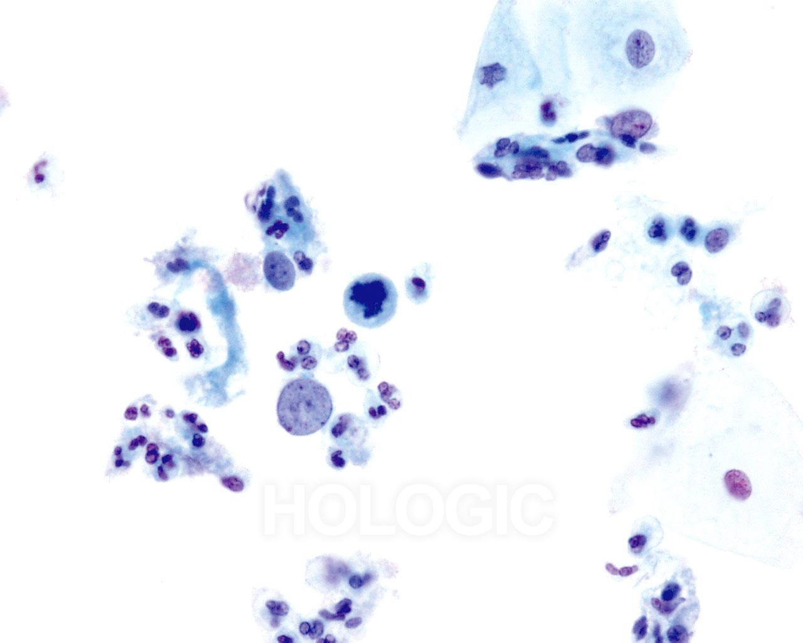
References
- Author. Title of article. Journal Name. Year;Volume(Issue):Pages.
- Author. Title of second article. Journal Name. Year;Volume(Issue):Pages.